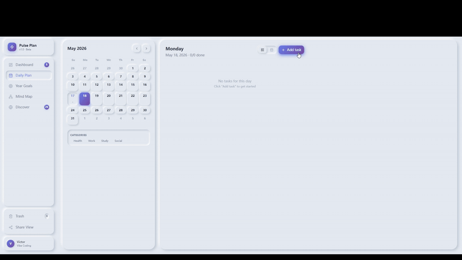
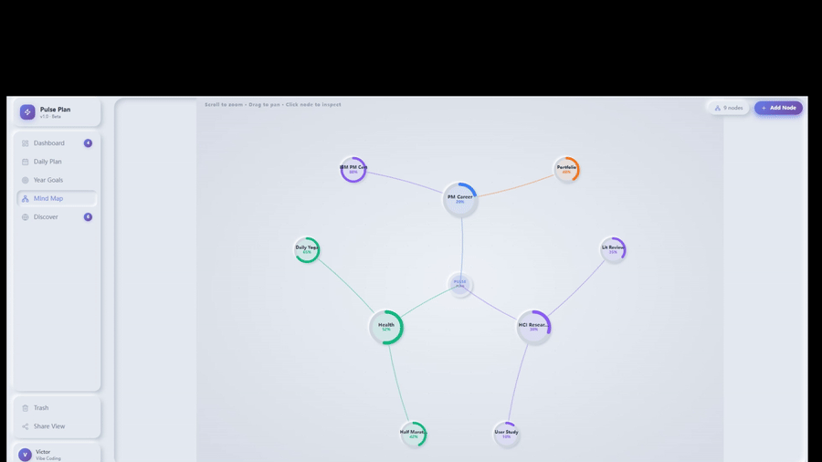

01 · The Problem
My planning life was scattered across 5 apps
As someone managing a job search, a Master's thesis, fitness goals, and a side project simultaneously, I found myself constantly context-switching — checking Notion for goals, Google Calendar for schedule, browser bookmarks for events, and a notes app for reflections. Nothing talked to each other.
-
No unified command center
Daily tasks, yearly goals, and discovery lived in separate apps with no connection between them.
-
Context-switching overhead
Deciding whether to attend an event required opening 3 apps to check schedule, goals, and energy levels.
-
No visibility on learning progress
Goals like "complete IBM certificate" or "finish thesis" had no visual progress tracking tied to daily actions.
"When I wake up or check my phone between tasks, I want to immediately know what I should do next — without mentally stitching together information from five different places."
02 · Product in Action
The two flows that demo the core idea
Adding a task lands it on both the calendar and the day timeline. The mind map turns linear goals into a spatial structure with progress rings.


03 · Features
What was built, and why
Month-view calendar with color-coded task dots. Day view toggles between a task list and an hour-by-hour timeline (6:00–24:00) showing scheduled blocks and free slots at a glance. Full task CRUD with inline edit, time, duration, priority, and category fields.
The timeline view answers the question "when am I free?" directly — the absence of blocks is as informative as the blocks themselves. Toggling between list and timeline serves two mental modes: planning and scheduling.
Paste any event URL — the app simulates extracting activities and presents them as decision cards with an Accept or Ignore binary choice. Accepted items go directly into the daily plan.
The key insight: the bottleneck isn't finding events, it's deciding quickly. The two-button decision flow reduces cognitive load to a binary choice, removing the "I'll do it later" trap.
Interactive SVG node map with animated progress rings (stroke-dasharray technique), zoom/pan canvas, radial layout algorithm, and click-to-expand subtask detail panel — zero external graph libraries.
Linear lists make learning goals feel like tasks. The spatial, radial map activates a different mental model — you see relationships and structure, not just checkboxes. Progress rings give emotional feedback at a glance.
Goal cards with category, target date, description, and milestone checklists. Completing milestones auto-calculates overall goal progress percentage. Full inline edit and delete on every goal and milestone.
Most goal apps fail because goals aren't connected to daily behavior. This tracker sits in the same app as the daily calendar — creating a natural loop between "what do I do today" and "why am I doing it."
04 · Key Decisions
Trade-offs I made on purpose
Chose localStorage to ship faster with zero auth complexity. The real product need (persistence) is met; cloud sync is a Phase 3 enhancement.
Custom SVG gave full control over the progress ring animation and interaction model. The constraint forced a deeper understanding of what the feature actually needs.
05 · If This Were a Real Product
What I'd measure
As a PM, shipping isn't the end — it's the beginning. Here are the metrics I'd track post-launch to validate whether Pulse Plan is actually reducing planning friction.
Are users returning every day? Planning tools only have value if they're habitual. Target: 60% D7 retention.
Percentage of daily tasks marked done. The core proxy for whether the app is helping users follow through.
Average subtasks per node. Depth signals users are investing in the tool for real learning goals, not just exploration.
% of users who use 3+ features. The app's value compounds when features interact — this measures whether the "unified" premise actually holds.
06 · Tech Stack
Built to be production-ready from day one
Chose tools that reflect modern frontend standards — not just to ship a prototype, but to demonstrate that technical decisions serve product goals.